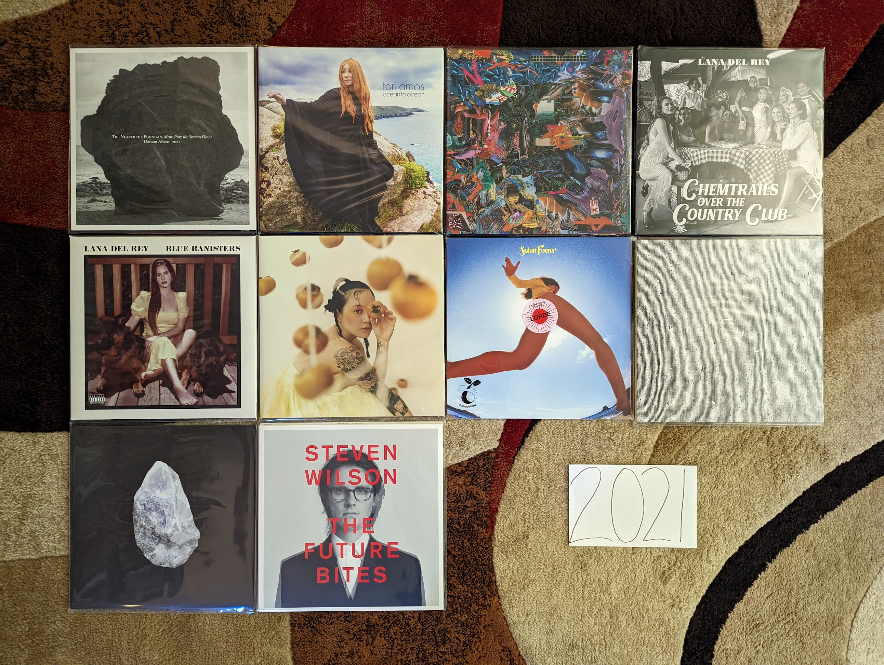

2021 Albums¶
This is the first year that was compiled with this project in progress, and in mind. How did this impact my listening? The impact is subtle, but I’m sensing an effort to branch out and hear new things (that aren’t just random things I’m hearing on NPR). By the time 2021 ended, I had been working from home for almost two years. I’m also seeing the kind of introspective music that fit in well with that kind of isolation. I also feel the effect the pandemic on a sense of isolation and self reflection in many of the records I was listening to.
{kind=link}
The Nearer the Fountain, More Pure the Stream Flows by Damon Albarn - I really didn’t like this the first time I heard it, but it really grew on me. Such a pretty, subtle record. [Memory: I liked this record well enough to seek out a vinyl copy, and it was really only after the first listen that way that I really connected with this one, especially the last few tracks.]
Ocean to Ocean by Tori Amos - Another really strong record, from an artist who keeps making them. Probably not as good as Native Invader but the song “Spies” is her best in a decade or more. [Memory: Tori came to Rochester for the first time in about 20 years on this tour and played a great show to a very engaged audience.]
Cavalcade by Black Midi - My favorite artist discovery in some years. (More than a decade maybe?). Some serious prog/math rock made with an indie spirit. So pretty, so dense, so much to wrap your head around. The kind of music that only makes sense to people with hundreds of favorite records, and hand craft a website to talk about them. [Memory: buying the LP online before I had even heard half the album because I was so taken]
Jubilee by Japanese Breakfast - We are now getting to the point where music is starting to sound like a retro throwback to the indie music I listened to in my college days. This is the kind of semi-twee indie pop that I loved 20 years ago, updated with the electronic sounds of our current age. [Memory: Around this time, It felt like every time Spotify radio took over after the music I actually chose to play, it played me the song “Paprika”. Did this make me like the album by brute force?]
Chemtrails Over the Country Club by Lana Del Rey - NFR wasn’t a fluke, but the beginning of a career on a whole new level. This is another extraordinary album filled with the old Lana tricks and a killer folk soul. The songwriting is top notch, and the performances are first rate. My favorite artist working today. [Memory: It had been about five years since I had heard an album on vinyl for my first listen, and I was glad I saved this one]
Blue Banisters by Lana Del Rey - How is this even better than her first album from 2021. How is she the most consistent artist of the current generation? What is the next album going to be like? Is it coming out this year too? [Memory: Being extremely confused about what this was when it was announced a few weeks after Chemtrails]
Solar Power by Lorde - Yes, this is a much subtler record with less lofty themes and goals. We live in an age where subtlety doesn’t get the credit it deserves. This is a great record. Don’t worry, I’m sure she will be back to some real melodrama someday soon. [Memory: For the second straight record I hated the lead single when I heard it, but I love the album (and ended up liking the lead single in time)]
Hey What by Low - [2021 FAVORITE] - When I became aware that these guys were making somewhat avant garde electronic music now, I had to hear it. Sure enough the beautiful harmonies were now backed by a super interesting and downright pretty interpretation of minimalist industrial. Are they really Mormons? Surely music this good must be sinful? [Memory: In a repeating theme this year, I bought a vinyl copy of this midway through my first listen]
Tomorrows III by Son Lux - Continuing my Star Wars analogy from last year, this is most definitely “Return of the Jedi” and “Embrace” is “Yub Nub” brining the whole thing home with a positive vibe, looking back on the themes that run through this amazing trilogy. [Memory: Streaming this first thing the morning it was released and feeling so satisfied by how the trilogy ended]
The Future Bites by Steven Wilson - I dig the sterile, anxious vibe of this record, even if the songs aren’t universally brilliant. Certainly music for our current age. The singles “KING GHOST” and “PERSONAL SHOPPER” are killer. Who here is surprised that this guy has changed sounds again? [Memory: The creepy video for “PERSONAL SHOPPER” is all I can think of when I hear this album]